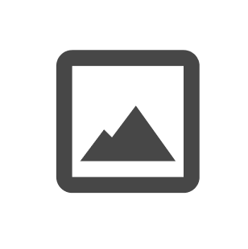

Woffle

Design Challenge
A significant portion of mobile users use productivity applications. Although helpful, it can become pretty easy to feel overwhelmed with trying to keep up and looking forward to what needs to be completed next.
My role
UX research
Brand & identity
Visual design
Timeline
3 weeks
Tools
Figma
Maze
My Approach
Woffle is an application that tracks progress and encourages users to be productive. It helps user be prepared for the future yet also allow them to reflect on all they've achieved.
Discovery
Get to know the users
I had 40 participants participate in my survey. I found that the majority of respondents forget to look at to-do and calendar applications. A general sentiment they had was feeling guilty for not completing all tasks. Also, the biggest frustrations found were that many could not visually prioritize tasks. It makes sense that people would feel overwhelmed looking at these applications; all of the information just sits on the screen so it’s only natural for someone to not make it a habit to look at something that seems to torment them. Many people were interested in an application that would affirm their progress and allow themselves to reflect. This led me to this question: productivity applications can make us feel like working robots, so how can I make it feel more humane?
How interested would you be in an application that affirms you when you reach a level of productivity?
How interested would you be in an application that helps you also reflect on your day or week?
Learning from Competitors
Strengths
- Connect with other Google applications
- Email invites on calendar
Weaknesses
- Cluttered interface
- Tasks are mixed in with events

Strengths
- Organize meetings and view group schedules
- Connects to the Outlook email
Weaknesses
- Features are constantly changing
- Looks different on mobile vs. desktop
The weaknesses idenitified through my competitive analysis were clear: clutter and inconsistency. These two applications had so many features that it became more confusing for users in the end. Now my questions started shifting: what are the necessary features for this application that I am making? How can I make the application simple but still do what it needs to do: promote productivity and positivity?
User Stories
| Role | Task | |
|---|---|---|
| As a new user | I want to see the calendar | High |
| As a returning user | I want to add/delete/edit an event | High |
| As a returning user | I want to add/delete/edit a task | High |
| As a returning user | I want to add notes and images | High |
| As a returning user | I want to reflect on my day or week | High |
| As a returning user | I want to feel accomplished as I complete tasks | High |
| As a returning user | I want to check off events and tasks | High |
| As a returning user | I want to visually prioritize what's most important on my list | Medium |
| As a returning user | I want to set a reminder | Medium |
| As a returning user | I want to color code my events | Medium |
| As a returning user | I want to look at other months | Medium |
| As a returning user | I want to easily move tasks | Low |
| As a returning user | I want to break down big tasks | Low |
| As a returning user | I want to see a single event | Low |
User Flow
Card Sorting Test
I did a card sorting test to determine how a user would want to organize the data. 2/3 respondents agreed that the format should be the following: home page has the overall progress and today’s events and to do list, one tab with calendar and today’s events, one tab with “today’s” and a general to do lists. This helped me move forward to wireframing.
Usability Test: Low-fi Wireframes
The purpose of my low-fi wireframe test was to see if the layout was working and even if the tabs made sense to the user. It also provided feedback if there was anything missing from their expectation or if anything was unnecessary. I found the sketches to be successful in communicating what the application does. One respondent was confused about the difference between “tasks” and “events”. I also asked users if they wanted to see their image of the day on the homescreen and, to my surprise, many did not feel that it would help them feel more reflective and instead wanted to navigate to the tab on their own time.
Usability Test: High-fi Wireframes
I conducted remote and in-person tests with Maze. More insight into my project, I found that there were fewer misclicks after testers were used to the layout of the app. For example, the first mission was to add a new event which had an average of 44.4% misclick rate, and the second mission was to add a new task which had an average misclick rate of 22.2%. This led me to believe that the consistency of the layout was effective and helpful for users.
My third task for users was to navigate to the reflection tab and add a picture. This caused some confusion. Those who did not know the purpose of the application had trouble understanding what this meant and took more time searching for the icon. This led me to reevaluate my choice in icon. I decided to go with a picture icon instead because the content of the tab still accomplishes the goal of reflecting. It’s a more recognizable icon and less subjective than calling it reflecting. Also, I found that there were some limitations to prototype tools. For example, I could not keep the tab bar to be fixed so users could not tell it was a tab bar when prompted to navigate. Also, when I watched users take the test they tried to press on something but if they did not press directly on the target area it resulted in a misclick, so the statistics could be misrepresented.
Visual Design
The name, Woffle, was inspired by many things. On the literal side, waffles have a grid-like look to them similar to calendars. On the symbolic side, waffles are sweet breakfast treat. They symbolize being excited about the future. The “o” alternative is a fun light-hearted letter change to avoid being so literal.
Since I wanted to evoke feelings of comfort and joy there's a motif of curved edges throughout the app. The typography is appealing to the eye, especially when there are many things that must be on the screen. This creates a simplistic look that is desired as I mentioned earlier. The application’s main colors are warm and bright. Orange is a color of encouragement, excitement, warmth, enthusiasm. Yellow is energetic, uplifting, and radiates confidence and happiness. The neon pink compliments the two main colors as it is vibrant, fun, and exciting. These colors work well in my application to compel users to feel energetic about tasks and joyful.
Usability Test: Mockups
I had participants complete 5 tasks related to adding items, finding information, and using features of the application such as checking a task as complete. All of my participants completed all of the tasks and gave an easiness rating average of 9.6/10. Changing the reflection tab icon to be a picture icon enabled participants to identify the tab much quicker.
This helped me understand that the icons, layout, and color schemes are all effective. Observing their behavior, I found that when instructed to add any sort of content they went to the respective tab and used the top-right add button instead of the add button at the bottom.
Reiterate, reiterate
I made some additional changes that were needed. They include:
- expanded add option shows as the whole screen
- fill color of the selected tab is orange instead of circled
- blank picture squares has date to see what day is missing
- larger circles on homescreen for completed tasks
- past events and completed tasks of the day are no longer on the homepage screen
- changes to event format, spacing, and font-weight
Conclusion
The application is very simple and users can easily navigate. The reflection tab is a great way for users to easily reflect on their day and the homepage is successful in not overbearing the user with work but shows them their progress. I've learned a few things along the way... First, writing things down is honestly a lifesaver and an amazing soft skill to have. In previous projects, I would write down things down, but not my thoughts. Those thoughts are so important, even the little ones. I have so many thoughts going in my head as I research and problem solve, which can be so easily forgotten. Writing things down is helpful because it reorganizes your thoughts and, I found, helps you retrace your steps so you can be positive that everything connects back to the original problem you’re trying to solve. It can be hard because it takes more time to constantly reflect and write things down as you move along the process, but this extra step really makes a big difference. Moving forward, I plan to stay disciplined in this area and keep a stack of post-its near me at all times!